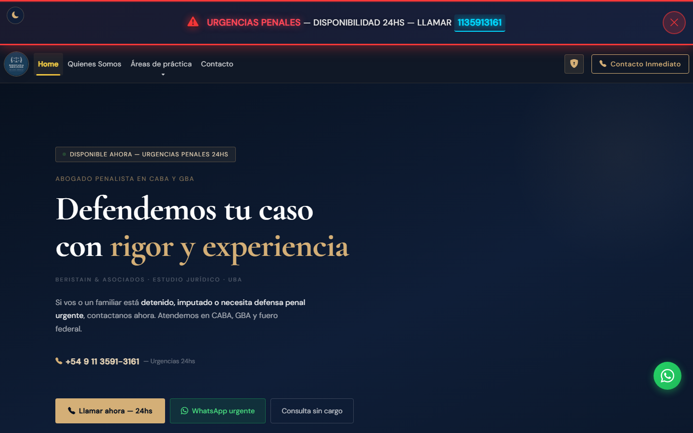
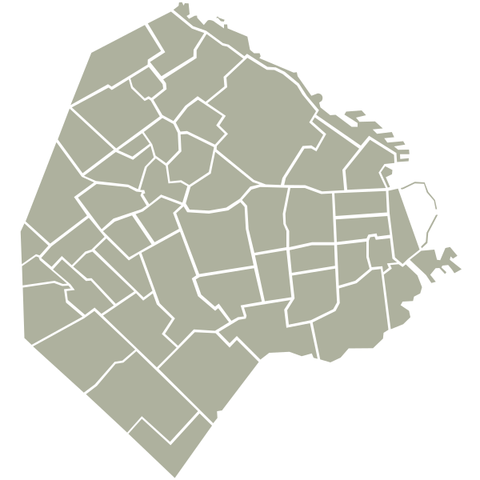
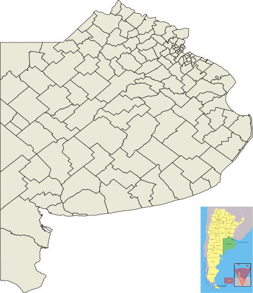
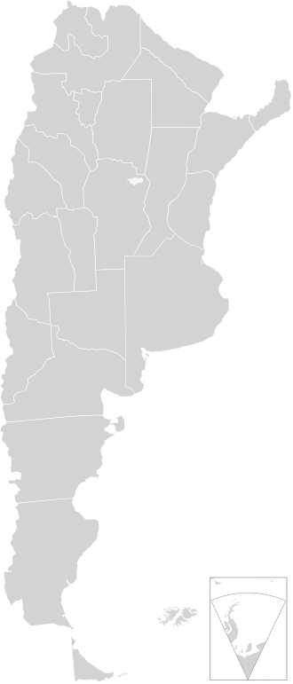

Abogado penalista en CABA y GBA
Defendemos tu caso
con rigor y experiencia
BERISTAIN & ASOCIADOS · ESTUDIO JURÍDICO · UBA
Si vos o un familiar está detenido, imputado o necesita defensa penal urgente, contactanos ahora. Atendemos en CABA, GBA y fuero federal.
+54 9 11 3591-3161 — Urgencias 24hs

¿Qué pasa si no actuás en las primeras 24hs?
En causas penales, cada hora cuenta. Estos son los riesgos concretos de no tener representación legal desde el primer momento.
Declarás sin asistencia jurídica
Sin abogado presente, podés decir algo que se use en tu contra. El derecho a guardar silencio existe, pero muchos no lo ejercen por no saber.
Se pierde la oportunidad de la excarcelación
La solicitud de excarcelación o libertad bajo fianza tiene plazos críticos. Una vez vencidos, el proceso de detención se consolida y es mucho más difícil revertirlo.
Se pierden pruebas clave
Las primeras horas son fundamentales para recolectar testimonios, preservar cámaras de seguridad y asegurar evidencia. Con el tiempo, esa prueba desaparece.
El costo se multiplica
Cuanto más tarde intervenga un abogado, más complejo y costoso es el proceso. Una consulta temprana suele evitar instancias judiciales innecesarias.
Sobre Nosotros
Somos un equipo interdisciplinario comprometido con ofrecerte un asesoramiento jurídico y contable pensado exclusivamente para vos, asegurándonos que tus intereses sean representados de manera total e íntegra.
Combinamos la especialización en derecho penal, civil y accidentes de tránsito con la solidez técnica de la contaduría pública y el peritaje judicial, para brindarte una defensa y asesoramiento verdaderamente completos.
Abogado — Socio Fundador
Dr. Leonardo Beristain
Egresado de la Universidad de Buenos Aires. Especialista en derecho penal, civil y accidentes de tránsito. Con un profundo compromiso hacia el ejercicio de la abogacía, ofrezco soluciones jurídicas concretas y eficaces en CABA, GBA y fuero federal.
Contadora Pública · Perito Contadora Judicial
Cra. Daniela Magalí Bava
Contadora Pública egresada de la UBA y Perito Contadora Judicial. Se desempeña como perito en causas civiles y penales, y brinda servicios contables integrales a través de DMB Estudio Contable.
Áreas de práctica
El Derecho Penal es nuestra especialidad principal. Sumamos Accidentes de tránsito, Derecho Civil y el respaldo técnico de nuestra Perito Contadora Judicial para brindarte una defensa integral.
Derecho Penal
- Denuncias
- Imputado
- Parte querellante y Particular damnificado
- Excarcelaciones
- Etapa de instrucción
- Probation
- Juicio abreviado
Derecho Civil y Contractual
- Redacción de contratos
- Cobros ejecutivos y deudas
- Reclamo de daños y perjuicios
- Locaciones y arrendamientos
- Responsabilidad civil extracontractual
- Prescripción adquisitiva
Derecho Societario
- Constitución de SA, SRL y SAS
- Redacción de estatutos sociales
- Contratos y acuerdos societarios
- Actas de directorio y asambleas
- Transformación, fusión y escisión
- Responsabilidad de socios y directores
Seguros y Accidentes de tránsito
- Accidentes de tránsito
- Reclamo de indemnizaciones
- Intimaciones a aseguradoras
- Reclamos administrativos
- Lesiones y daño físico
- Mediación prejudicial
¿Dónde te representamos?
Actuamos en CABA, el Gran Buenos Aires y ante la Justicia Federal en todo el país.

CABA
- Todos los fueros y juzgados
- Sede principal del estudio
- Atención presencial en Av. Rivadavia 8012

Gran Buenos Aires
- Toda la Provincia de Buenos Aires
- Todos los departamentos judiciales
- Consultas y representación a distancia

Fuero Federal
- Causas federales en todo el país
- Tribunales federales penales y civiles
- Defensa técnica en instancias nacionales
Servicios Complementarios
Un equipo interdisciplinario que combina derecho, contaduría y gestión para defender tus intereses de forma completa.
Peritaje Contable Judicial
Cra. Daniela Magalí Bava — Perito Contadora Judicial (UBA)
Actúa como perito contadora en causas civiles y penales. Valuaciones, liquidaciones judiciales y balances periciales ordenados por la Justicia.
Servicios Contables
Cra. Daniela Magalí Bava — Contadora Pública (UBA)
Liquidaciones de sueldos · Declaraciones juradas · Gestión impositiva · AFIP · Asesoramiento empresarial
DMB Estudio ContableAdministración de Consorcios
Gestión administrativa, contable y legal de edificios y comunidades de propietarios con total transparencia.
Expensas · Asambleas · Proveedores · Seguros del consorcio
Lo que dicen nuestros clientes

Martin Zarate
"Excelente atención por parte del equipo de abogados. Resolvieron mi caso de manera rápida y profesional. ¡Totalmente recomendados!"

Liliana Serrano
"Gracias a Beristain & Asociados, pude resolver un problema legal complicado. Siempre estuvieron disponibles para asesorarme."
Evelyn
"Muy profesionales y comprometidos. Me sentí acompañada en todo momento. Definitivamente los elegiría nuevamente."
Lo que más nos preguntan
¿Qué hago si me detienen o detienen a un familiar?
Lo primero es ejercer el derecho a guardar silencio hasta tener asistencia legal. No declarés sin un abogado presente. Llamanos inmediatamente al +54 9 11 3591-3161 — estamos disponibles las 24hs para urgencias penales.
¿Cuánto cuesta la defensa penal?
Los honorarios se fijan según la complejidad del caso, el fuero y la instancia procesal. La primera consulta es siempre sin cargo. Analizamos tu situación y te damos un presupuesto claro antes de comenzar.
¿En qué casos conviene llamar a un abogado penalista?
Ante cualquier citación policial o judicial, detención, imputación, o si sos víctima de un delito y querés presentar una denuncia o constituirte en querellante. Cuanto antes actuás, mejores son los resultados.
¿Qué es la probation y cuándo se puede pedir?
La probation (suspensión del juicio a prueba) permite resolver la causa sin condena en delitos de pena menor. Requiere cumplir ciertas condiciones por un período determinado. No todos los casos califican — evaluamos tu situación sin cargo.
Tuve un accidente de tránsito, ¿la aseguradora debe cubrirme?
Las aseguradoras frecuentemente ofrecen montos muy inferiores a los que corresponden o directamente rechazan el reclamo. Con representación legal podés reclamar la indemnización real por lesiones, daños materiales y lucro cesante.
¿Para qué sirve un perito contador judicial?
El perito contadora actúa como auxiliar del juez en causas donde hay cuestiones económicas o patrimoniales: fraudes, estafas, liquidaciones de sociedades, sucesiones con bienes, o cualquier proceso donde se necesite analizar documentación contable ante la Justicia.